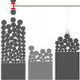

Visual Sedimentation
# setting.stream{}
Examples
|  | the stream define the interval of refresh, in case of a datastream simulator, it's the interval between two tokens |
|
null
|
setting.data.stream = {
provider:"generator",
now:0,
refresh:100
}
|
|
null
|
setting.data.stream = {
provider:"generator",
now:,
refresh:1000
}
|
Description
Stream object permit to configure two things : (1) how data will be updated, (2) the clock of the visulization.
For the data :
- Stream provider includes a basic data stream generator (provider:"generator") that will generate tokens all the time.This generator provides synthetic data mostly for testing the visualization.
- If you defined it provider:"tokens", it will play defined tokens in settings.data.tokens{}.
Clock defined each time the generator will be activate, it could be parametrized as follow :
- You could define the reference time of the visualization, for instance now: or now:0.
- And define the rate in which this time will be increment by one, for instance refresh:1000 will increment now each seconds
Stream have to be define at the setup of the infoviz.
Syntax
setting.data.stream = {
provider:"generator",
now:0,
refresh:1000
}
Parameters
| provider | "tokens", or "generator", (by default "generator") |
| refresh | refresh rate of the clock in milliseconds (by default 1000) |
| now | actual time of the visualization, will be increment by one at the refresh rate indicate below. |
Return
nothing.
Related
setting:{},
data:{}